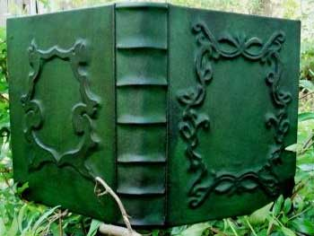
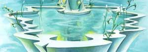
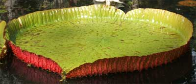

REGOLE GENERALI PER LA PRODUZIONE DEGLI INCANTAMENTI MINORI
Gli incantamenti magici minori possono essere creati dai chierici di Arlinir a partire dal raggiungimento di un livello minimo che varia al variare della potenza dell'incantamento minore come previsto nella seguente tabella:
|
POTENZA DELL'INCANTAMENTO |
LIVELLO RICHIESTO |
| Least Minor Enchantment | 3° livello di esperienza |
| Lesser Minor Enchantment | 4° livello di esperienza |
| Minor Enchantment | 5° livello di esperienza |
| Superior Minor Enchantment | 6° livello di esperienza |
| Greater Minor Enchantment | 7° livello di esperienza |
REGOLE SPECIFICHE PER PRODURRE INCANTAMENTI MINORI DI ARLINIR
1) I LIBRI SACRI DI ARLINIR :

I chierici di Arlinir
che desiderano creare
incantamenti magici minori devono possedere i libri sacri contenenti le
preghiere alla loro divinità. I libri sacri
sono oggetti personali di ogni chierico. Per ogni tipologia generale di incantamenti
è necessario utilizzare specifici libri sacri.
Ogni libro sacro ha un valore pari a 500 monete d'oro
(costo di manutenzione mensile pari a 3 monete d'oro) ed un peso pari a 4
libbre.
Possedere questi libri, come del resto ogni altro libro sacro, rientra nella
pratica del culto della divinità. Per tale motivo il chierico che acquista tali
libri riceverà un ammontare
di punti esperienza
bonus pari a 200 punti esperienza per singolo libro acquistato. Occorre osservare che
il chierico acquisirà i punti esperienza solo dopo aver
raggiunto il terzo livello di esperienza. Si noti che questi punti
esperienza saranno applicati unicamente al personaggio ed in nessuna misura ai
punti partenza e che, di ruolo, il chierico eviterà in ogni modo di disfarsi dei
suoi libri sacri che dovrà custodire gelosamente (qualora li venda o li regali costui
potrà essere penalizzato dal Dungeon Master).
I libri sacri del culto di Arlinir sono i seguenti:
Libro delle Foglie (1 libro sacro)
Tomo degli Arcieri (1 libro sacro)
Tomo delle Lame Elfiche (1 libro sacro)
Tomo della Luce Lunare (1 libro sacro)
Volumi della Vita (3 libri sacri)
Per poter produrre un incantamento minore, quindi, il chierico dovrà possedere
il volume (o tutti i volumi in caso dei Volumi della Vita) necessario per
iniziare la procedura di incantamento. I libri sacri necessari per ogni
tipologia di incantamento sono elencati nella seguente tabella:
| TIPOLOGIA DI INCANTAMENTO | LIBRO SACRO RICHIESTO |
| Pergamena di Arlinir | Tomo della Luce Lunare |
| Potion of Elven Stasis | Tomo della Luce Lunare |
| Elven Golden Rope | Tomo della Luce Lunare |
| Arrows of Elven Accurancy | Tomo degli Arcieri |
| Lesser Leaf of Life | Volumi della Vita |
| Amulet of Life Preservation | Volumi della Vita |
| Blade of Elven Agility | Tomo delle Lame Elfiche |
| Leaf of Life | Volumi della Vita |
| Ring of Moon Light | Tomo della Luce Lunare |
| Superior Amulet of Life Preservation | Volumi della Vita |
| Greater Leaf of Life | Volumi della Vita |
| Amulet of Elven Physical Integrity | Volumi della Vita |
| Greater Amulet of Life Preservation | Volumi della Vita |
2) LA VASCA DELLA RUGIADA E LA FOGLIA SACRA :


I chierici di Arlinir
che desiderano creare
incantamenti magici minori devono poter operare presso la Vasca della Rugiada,
luogo rituale
Per poter operare nella Vasca della Rugiada il chierico di Arlinir necessita della Foglia Sacra. La Foglia Sacra è un oggetto personale di ogni chierico. Si tratta di una grande e robusta foglia sulla quale, messa a galleggiare nella Vasca della Rugiada, viene posizionato l'oggetto che il chierico vuole incantare. La Foglia Sacra è una pianta abbastanza rara che viene raccolta nelle pozze e negli stagni delle foreste esclusivamente durante il mese di Norio ed è utilizzabile per tutto l'anno solare fino alla fine del mese di Croon quando sarà necessario sostituirla. Viene solitamente venduta presso ogni Tempio di Arlinir al costo di 125 monete d'oro, ha un peso pari a 2 libbre. Questa foglia può essere recuperata da chi ha la competenza Herbalism e la cerca in zona di foresta durante il mese di Norio. Essendo necessario cercarla in zone particolari (stagni o pozze d'acqua), quando il personaggio cerca questa foglia non potrà tirare per il ritrovamento di altre piante. Il personaggio quindi dovrà superare la prova nella competenza con una penalità di - 4. Per ogni pianta rarissima che troverà utilizzando queste regole costui avrà trovato una Foglia Sacra di Arlinir (tutti gli altri risultati saranno considerati nulli).
3) TEMPO DI PRODUZIONE : Il tempo di produzione minimo di un incantamento minore dipende dal tipo di incantamento ed è espresso nella seguente tabella. Il chierico può dedicare più o meno tempo alla produzione di un incantamento minore, rispettivamente migliorando o peggiorando le proprie possibilità di successo. In ogni caso non occorre che il chierico effettui i giorni di lavoro consecutivamente ben potendo sospendere il lavoro quando desidera per poi riprenderlo successivamente.
| TIPOLOGIA DI INCANTAMENTO |
LIVELLO DI ESPERIENZA DEL CHIERICO DI ARLINIR |
|||||
| 3° LIVELLO | 4° LIVELLO | 5° LIVELLO | 6° LIVELLO | 7° LIVELLO | 8+° LIVELLO | |
| Pergamena di Arlinir | 20 | 18 | 15 | 12 | 10 | 8 |
| Potion of Elven Stasis | 20 | 18 | 15 | 12 | 10 | 8 |
| Elven Golden Rope | -- | 30 | 27 | 24 | 22 | 20 |
| Arrows of Elven Accurancy | -- | -- | 40* | 37* | 34* | 31* |
| Lesser Leaf of Life | -- | -- | 40 | 37 | 34 | 31 |
| Amulet of Life Preservation | -- | -- | 43 | 40 | 37 | 34 |
| Blade of Elven Agility | -- | -- | -- | 57 | 54 | 51 |
| Leaf of Life | -- | -- | -- | 54 | 51 | 48 |
| Ring of Moon Light | -- | -- | -- | 54 | 51 | 48 |
| Superior Amulet of Life Preservation | -- | -- | -- | 57 | 54 | 51 |
| Greater Leaf of Life | -- | -- | -- | -- | 90 | 87 |
| Amulet of Elven Physical Integrity | -- | -- | -- | -- | 93 | 90 |
| Greater Amulet of Life Preservation | -- | -- | -- | -- | 96 | 83 |
* Il tempo di produzione delle Arrow of Elven Accurancy si riferisce all'incantamento contestuale di 33 frecce (che il chierico può selezionare a piacere tra frecce da guerra e da caccia che siano tutte, però, obbligatoriamente della medesima qualità e fattura).
4) COSTI DI PRODUZIONE : Per la produzione di un incantamento minore il chierico deve utilizzare un ammontare di reagenti e polveri magiche pari ad un determinato ammontare del valore finale dell'incantamento. Il chierico può decidere di utilizzare componenti magici in misura ridotta, normale od abbondante. Questa scelta di ripercuoterà sulle % di successo dello stesso nella produzione dell'oggetto magico, come in seguito specificato.
|
AMMONTARE DI REAGENTI |
% DEL VALORE FINALE |
| Componenti magici in misura ridotta | 20 % |
| Componenti magici in misura comune | 25 % |
| Componenti magici in misura abbondante | 30 % |
5) PERCENTUALE DI SUCCESSO : Al termine dei giorni di lavoro il chierico potrà tirare un dado percentuale per verificare se la creazione dell'oggetto ha avuto successo. Qualora il tiro del dado dia un risultato negativo, il chierico avrà perso tempo e denaro (costi di produzione) e non avrà incantato l'oggetto. Il chierico, però, potrà in futuro ripetere il procedimento al fine di incantamento con lo stesso incantamento minore il medesimo oggetto. In questo caso, il chierico impiegherà solo la metà del tempo e delle risorse richieste dal procedimento prescelto ottenendo un bonus alla percentuale di successo pari al +5% cumulativo fino ad un bonus massimo del +15%. In nessun caso il chierico potrà ottenere una percentuale di successo superiore al 95%, risultando un risultato da 96 a 100 sempre in un fallimento critico. In caso di fallimento critico il personaggio non potrà più provare ad incantare quel singolo oggetto con quel determinato incantamento minore. Con un tiro naturale da 01 a 05, invece, si verificherà un successo critico. In caso di successo critico il procedimento di incantamento sarà riuscito ed il chierico avrà anche risparmiato il 10% dell'ammontare di reagenti magici.
|
POTENZA DELL'INCANTAMENTO |
% BASE DI SUCCESSO |
| Least Minor Enchantment | 33 % |
| Lesser Minor Enchantment | 30 % |
| Minor Enchantment | 27 % |
| Superior Minor Enchantment | 24 % |
| Greater Minor Enchantment | 21 % |
|
LIVELLO DI ESPERIENZA DEL CHIERICO |
MODIFICATORE % |
| Per ogni livello di esperienza raggiunto | + 1 % |
| Per ogni superiore grado di potenza di minor enchantment che il chierico è potenzialmente in grado di produrre rispetto a quello che sta producendo * | + 5 % (max +20%) |
|
COMPETENZE POSSEDUTE |
MODIFICATORE % |
| Se il chierico riesce in una prova in Ceremony | +5% (+10% successo criico, -5% fallimento critico) |
| Se il chierico riesce in una prova in Religion | +3% (+6% successo criico, -3% fallimento critico) |
|
TEMPO DI PRODUZIONE |
MODIFICATORE % |
| Riduzione del tempo di produzione * | - 5 % |
| Tempo di produzione base | nessuno |
| Aumento del tempo di produzione * | + 5 % |
|
AMMONTARE DI REAGENTI |
MODIFICATORE % |
| Componenti magici in misura ridotta | - 5 % |
| Componenti magici in misura comune | nessuno |
| Componenti magici in misura abbondante | + 5 % |
|
ADORATRICE DELLA LUNA |
MODIFICATORE % |
| Per l'utilizzo di un Punto Pianta sottratto alla Pianta | + 5% (utilizzabile massimo un punto) |
| * Questo bonus cumulativo si aggiunge a quello generico dovuto all'esperienza del chierico. Per determinare l'ammontare di questo bonus occorre determinare quanti incantamenti di potenza superiore il chierico sarebbe potenzialmente in grado di creare per il livello di esperienza raggiunto. Per ogni incantamento di potenza superiore al quale il chierico ha potenzialmente accesso costui riceve un bonus cumulativo del +5%. Qualora, ad esempio, un chierico di 8° livello si cimentasse a creare un Lesser Minor Enchantment costui otterrebbe per il suo livello di esperienza un bonus base di +8 oltre ad un bonus di +15 per essere in grado di produrre incantamenti di tre potenze superiori. Se, invece, lo stesso chierico si cimentasse a creare un Minor Enchantment costui otterrebbe per il suo livello di esperienza un bonus base di +8 oltre ad un bonus di +10 per essere in grado di produrre incantamenti di tre potenze superiori. |
| * L'ammontare di giorni di differenza in caso di riduzione od aumento dei tempi di produzione sarà pari a due giorni per potenza di incantamento come indicato nella seguente tabella (tale riduzione/incremento potrà essere operato un'unica volta): |
|
POTENZA DELL'INCANTAMENTO |
GIORNI OPZIONALI |
| Least Minor Enchantment | 2 giorni |
| Lesser Minor Enchantment | 4 giorni |
| Minor Enchantment | 6 giorni |
| Superior Minor Enchantment | 8 giorni |
| Greater Minor Enchantment | 10 giorni |
5 bis) MODIFICHE SPECIFICHE PER TIPOLOGIA DI INCANTAMENTO
| Arrows of Elven Accurancy |
|
MODIFICATORI SPECIFICI |
MODIFICATORE % |
| Frecce di comune qualità | - 6 % |
| Frecce di buona qualità | - 4 % |
| Frecce di eccellente qualità | - 2 % |
| Frecce di superba qualità | nessuno |
| Frecce magiche con incantamento maggiore | +5 % |
| Se il chierico riesce in una prova nella competenza Bowyer/Fletcher | +3% (+6% successo criico, -3% fallimento critico) |
| Blade of Elven Agility |
|
MODIFICATORI SPECIFICI |
MODIFICATORE % |
| Arma di comune qualità | - 9 % |
| Arma di buona qualità | - 6 % |
| Arma di eccellente qualità | - 3 % |
| Arma di superba qualità | nessuno |
| Arma magica con incantamento maggiore | +5 % |
| Se il chierico riesce in una prova nella competenza Quickness | +2% (+4% successo criico, -2% fallimento critico) |
| Arma di materiale speciale Mithril | +3 % (cumulabile con fattura e incantamento) |
| Lesser Leaf of Life |
| Leaf of Life |
| Greater Leaf of Life |
|
MODIFICATORI SPECIFICI |
MODIFICATORE % |
| Se il chierico riesce in una prova nella competenza Sage Knowledge-Healing | +3% (+6% successo criico, -3% fallimento critico) |
| Ring of Moon Light |
|
MODIFICATORI SPECIFICI |
MODIFICATORE % |
| Per ogni carato della Pietra di Luna inferiore a 10 | - 2 % |
| Per una Pietra di Luna di 10 carati | nessuno |
| Per ogni carato della Pietra di Luna superiore a 10 | + 1 % |
| Se la gemma è di qualità scadente | - 6 % |
| Se la gemma è di qualità comune | - 3 % |
| Se la gemma è di qualità buona | nessuno |
| Se la gemma è di qualità eccellente | +2 % |
| Se la gemma è di qualità favolosa | +5 % |
| Se il chierico riesce in una prova nella competenza Gem Cutting | +3% (+6% successo criico, -3% fallimento critico) |
6) PUNTI
ESPERIENZA
Qualora il chierico
riesca nella creazione di un incantamento minore costui
riceverà, la prima volta che riesce nella
costruzione di un tipo specifico di oggetto magico, punti esperienza
pari al 100% di quelli dell'incantamento, mentre le volte
successive,
punti esperienza
pari al 50% di quelli dell'incantamento che ha
creato. Ogni volta che, invece, costui
porti a compimento il tentativo senza riuscire ad incantare l'oggetto riceverà
un ammontare di
punti esperienza pari al 25% di quelli
dell'incantamento minore che ha provato a creare. Si noti che
questi punti esperienza saranno applicati unicamente al personaggio ed in
nessuna misura ai punti partenza.
Un chierico di Arlinir che, avendo raggiunto l'ottavo livello di esperienza, sia
riuscito nella creazione di un incantamento minore per categoria di potenza
otterrà un bonus costante del
+2% ogni volta che ottiene punti esperienza fino
a che resterà in possesso di tutti i tomi sacri necessari alla creazione degli
oggetti magici minori. Si noti che questo bonus è applicato unicamente ai punti
esperienza del personaggio e non ai punti partenza del giocatore. Inoltre,
questo bonus si applica solo ai punti esperienza acquisiti dal personaggio nel
corso delle sedute di gioco e
non incide nei punti esperienza calcolati in fase di
creazione del personaggio.